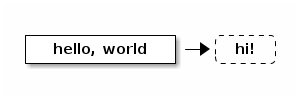

Notice
This document is for a development version of Ceph.
Documenting Ceph
User documentation
The documentation on docs.ceph.com is generated from the reStructuredText
sources in /doc/ in the Ceph git repository.
Please make sure that your changes are written in a way that is intended
for end users of the software, unless you are making additions in
/doc/dev/, which is the section for developers.
All pull requests that modify user-facing functionality must include corresponding updates to documentation: see Submitting Patches for more detail.
Check your .rst syntax is working as expected by using the “View”
button in the github user interface when looking at a diff on
an .rst file, or build the docs locally using the admin/build-doc
script.
For more information about the Ceph documentation, see Documenting Ceph.
Code Documentation
C and C++ can be documented with Doxygen, using the subset of Doxygen markup supported by Breathe.
The general format for function documentation is
/**
* Short description
*
* Detailed description when necessary
*
* preconditions, postconditions, warnings, bugs or other notes
*
* parameter reference
* return value (if non-void)
*/
This should be in the header where the function is declared, and functions should be grouped into logical categories. The librados C API provides a complete example. It is pulled into Sphinx by librados.rst, which is rendered at Librados (C).
To generate the doxygen documentation in HTML format use:
# cmake --build . --target doxygen
HTML output will be under: build-doc/doxygen/html
Drawing diagrams
Graphviz
You can use Graphviz, as explained in the Graphviz extension documentation.
digraph "example" { foo -> bar; bar -> baz; bar -> th }Most of the time, you’ll want to put the actual DOT source in a separate file, like this:
.. graphviz:: myfile.dot
See the Dot User’s Manual by Emden R. Gansner, Eleftherios Koutsofios, and Stephen North for examples of digraphs. This is especially useful if this is your first time encountering GraphViz.
Ditaa
You can use Ditaa:

Blockdiag
If a use arises, we can integrate Blockdiag. It is a Graphviz-style declarative language for drawing things, and includes:
block diagrams: boxes and arrows (automatic layout, as opposed to Ditaa)
sequence diagrams: timelines and messages between them
activity diagrams: subsystems and activities in them
network diagrams: hosts, LANs, IP addresses etc (with Cisco icons if wanted)
Inkscape
You can use Inkscape to generate scalable vector graphics. https://inkscape.org/en/ for restructuredText documents.
If you generate diagrams with Inkscape, you should commit both the Scalable Vector Graphics (SVG) file and export a Portable Network Graphic (PNG) file. Reference the PNG file.
By committing the SVG file, others will be able to update the SVG diagrams using Inkscape.
HTML5 will support SVG inline.
Brought to you by the Ceph Foundation
The Ceph Documentation is a community resource funded and hosted by the non-profit Ceph Foundation. If you would like to support this and our other efforts, please consider joining now.